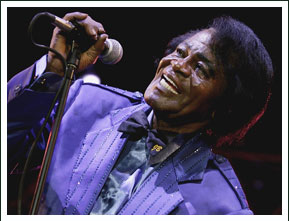

A film can fail for many reasons. A biopic can fail for all of the usual reasons, including miscasting the lead. When the viewer already knows the main character, or at least what they look and sound like, the director must overcome the added obstacle of convincing the audience to buy into the lead character’s portrayal - or to at least suspend their disbelief in its legitimacy. A music biopic is even more difficult as the director needs an actor that can look, behave, and perform like the real thing. There are a lot of variables and trade-offs that can work well in one film but just don’t in another.
When casting a musical biopic the ideal lead will be able to actually perform the musical material as well as act like his/her character. In “Get On Up” Chadwick Boseman gives an extremely convincing performance as James Brown but, in fact, lip syncs to all of the songs in the film. The look and mannerisms are there, but asking any actor to replicate James Brown’s persona, singing voice and unique stage performance style is nearly impossible, so we should not be surprised Boseman falls short of actually becoming the Godfather of Soul himself.
The list of films featuring actors who perform the songs of their respective main characters is short. Most of them are well known due to outstanding actors who disappear into seamless portrayals of the difficult roles required for such movies. Albeit long, “Walk the Line” holds the viewer due to the fact that audiences believe Joaquin Phoenix is Johnny Cash and Reese Witherspoon is June Carter. The same goes for Sissy Spacek’s convincing portrayal of Loretta Lynn in “Coal Miner’s Daughter” and Jamie Foxx as “Ray”. (Both won Oscars for their performances, although Foxx lip-synced in places). Gary Busey made a name for himself in 1978 with his great performance as the lead in “The Buddy Holly Story”. He didn’t simply mimic Buddy Holly, but his portrayal of the rock pioneer was nevertheless so convincing the suspension of disbelief is there when one watches the film. Sadly, some musical biopics fail to achieve the necessary suspension of disbelief required to make such films work – Kevin Spacey’s mediocre performance as Bobby Darin in “Beyond the Sea” just didn’t engage audiences, as was illustrated in the film’s weak box office draw.
When a lead actor who can both embody the main character as well as sing the musical material convincingly cannot be found for a musical biopic the film’s musical routines must be entirely lip synced - as is the case with “Get On Up”. In these cases it is difficult to achieve believability if only for the fact that such films require superimposed performances not married to actual vocalizations or singing. Just like Boseman, both Lou Diamond Phillips in “La Bamba” and Kurt Russell in John Carpenter’s “Elvis” gave stellar performances; the actors were allowed to concentrate on capturing their characters’ nuances without the additional requirement of actually hitting all the right notes. More often than not though, a lip-synced film winds up looking like karaoke, as was the case with “Great Balls of Fire” starring Dennis Quaid - despite the fact that Jerry Lee Lewis had re-recorded his songs specifically for the film. The same can be said about virtually every Made For TV musical biopic.
In the end it comes down to how much a director expects his audience to know about the film’s subject matter. The more well known the protagonist, the greater the challenge in convincing an audience to believe in the accuracy of its portrayal. In the case of musical biopics, having a lead actor who can deliver convincing musical performances (singing or otherwise) goes a long way. A true fan will always find fault in any portrayal of his or her idol but should also be able to just sit back and enjoy a solid performance.